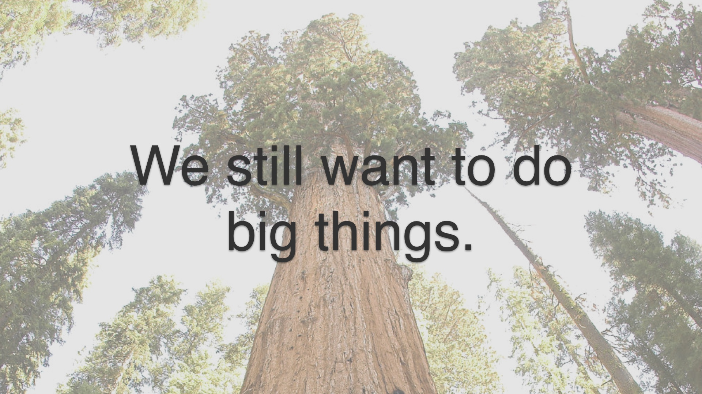
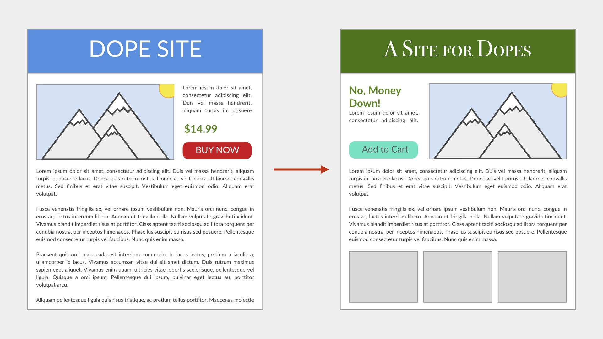
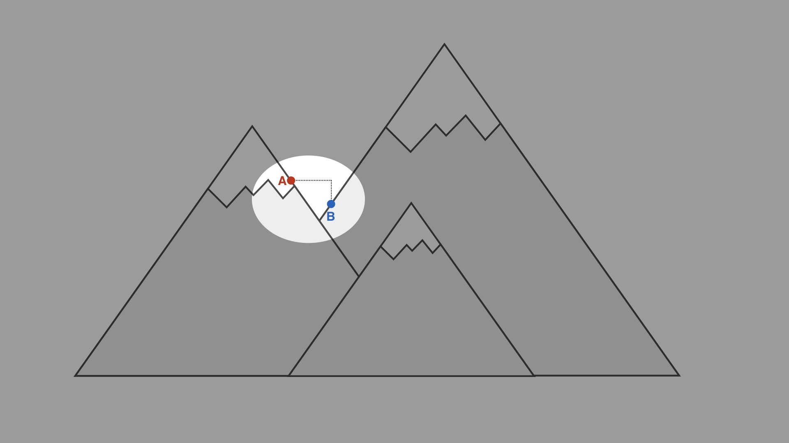
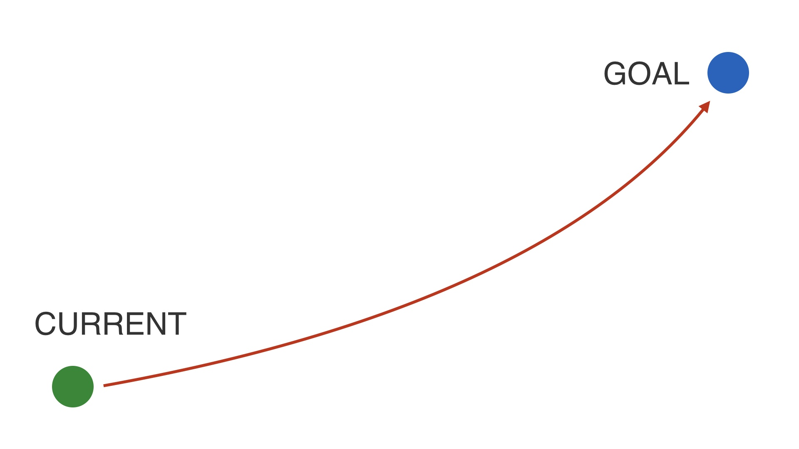
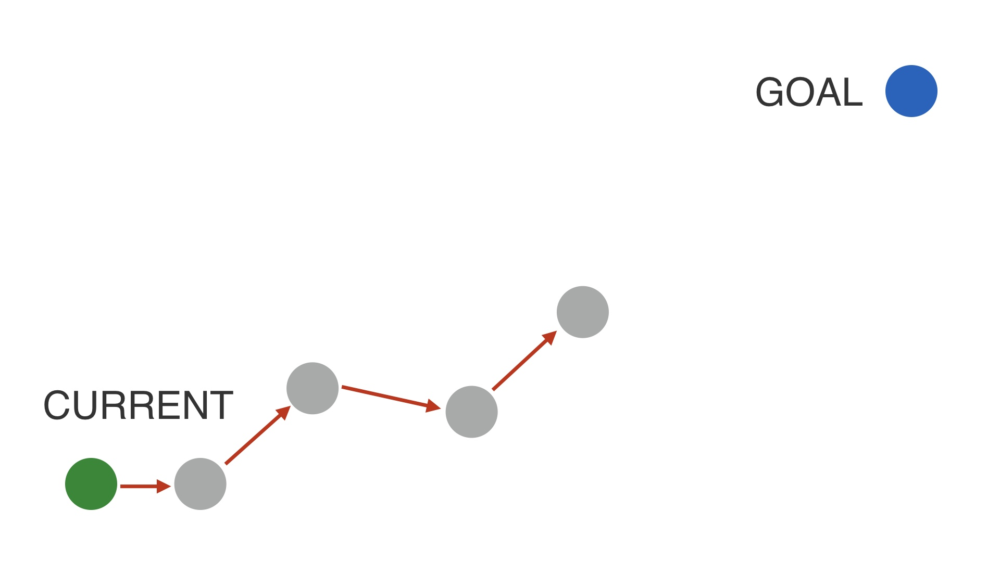
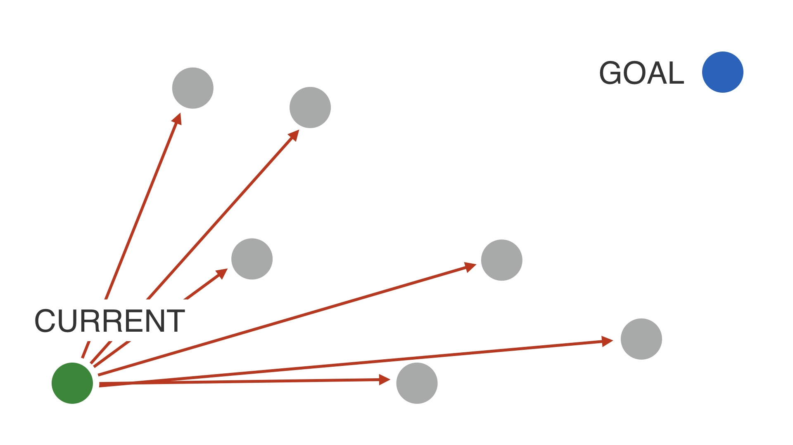
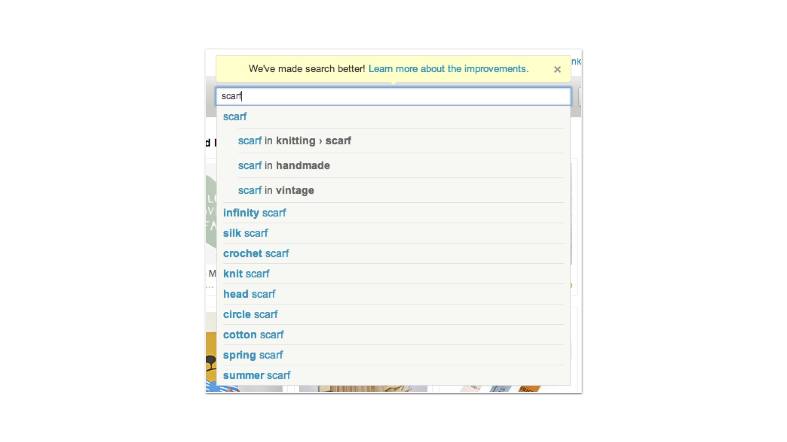

| Let's talk about how to plan and execute big changes to a web product. # | |
| Here’s the thing about really big changes to a product: they mostly don’t work. # | |
|
If you’ve worked in technology for a while, you’ve probably worked on at least one release that was a lot of effort, but that didn’t go as planned. Maybe not a failure as spectacular as this one—Digg pretty famously released a major redesign called “v4” that basically led to the downfall of the entire company. # |
|
|  | Despite cautionary tales like that, though, we still want to do big things. What do we do? # |
|
A/B testing is a great way to measure objectively whether a given release is good or not. A/B testing is great at optimizing a website or a web page that already exists. What do we do if we want to make something new? # |
|
|
In some circles A/B testing is associated with unimportant changes. Back in 2009 Douglas Bowman somewhat famously rage quit Google design, leaving a rant about optimization. Among other things. # |
|
|
He complained about debating minuscule design decisions, for example testing 41 different shades of blue.. I certainly commiserate with Douglas’s workplace angst. And I don’t find it hard to believe that engineers running the asylum is a factor at Google. It’s hard for me to completely condemn Google’s behavior without knowing all of the details. At Google’s scale, a shade of blue may very well be worth millions of dollars. # |
|
| The stereotype of A/B testing is that it’s good for climbing the hill that you’re already standing on. # | |
| But it won’t help you find a different, possibly much higher hill to climb. # | |
| So does that mean A/B testing isn’t relevant if our goal is to find the bigger hill? # | |
| No way. A/B testing is still relevant. # | |
|
A/B testing can still be used to measure the difference between two things, even if the differences are large. A/B testing can tell you whether or not where you’re standing now is better or worse than where you were. Even if you’ve redesigned everything and you’re metaphorically standing on a different hill now. # |
|
| measurement is still possible. # | |
|
An argument I’ve heard from people is that you shouldn’t bother A/B testing something if you’re making a big change. I think that you shouldn’t stand for this. But they are right that there are problems with A/B testing for big changes. The problem isn’t that measurement is impossible. # |
|
|  | If you’ve made a major set of changes and try to measure the difference… # |
| The problem is that you’ve made many changes. A single measure of whether it’s better or worse can’t tell you which change, or which set of changes made together caused the difference. # | |
| It’s not that single measurements for big changes don’t work. The problem is that single measurements aren’t informative. # | |
|
In our metaphors so far, we’ve assumed that we can actually perceive our environment. This is not really how it works. You can’t see the mountains, you have to try to infer your relationship to them. When you release a test that’s a radical change and you measure it to be worse, # |
|
|
It might be that you’ve jumped onto a smaller hill. If that’s the case then you should give up and try something else. But how do you know? # |
|
|  | It might be that you’ve jumped onto a hill that’s higher than the one you’re on, but at a lower level. If that’s the case then you should start optimizing from where you are. # |
| The analogy is really too apt. Our drawing is too simple. The real universe of possible products is more like a map of the Earth. # | |
| Mount Everest presents a really small target, when you think about it. If you throw a dart at a map of the Earth you’re pretty unlikely to hit it. # | |
|
The set of places that are not Mount Everest is extremely large, and most of those places are underwater. There’s about one way to be globally optimal, and infinite ways to be suboptimal. Your site is almost definitely suboptimal. This seems philosophically uncontroversial. # |
|
| I know of two general strategies for actually executing big changes. # | |
|  | We’d like to think that we can do this. We can just have a goal in mind, and jump to it. # |
| But we can’t do that—odds are we’re just going to wind up in the ocean, not on everest. # | |
| The first method for making big changes works like this. # | |
|  | You have a strategic goal in mind, and you try to make tactical steps towards it one at a time. If you try a change and it’s better—or at least not worse—and it’s in the direction that you want to go, then you just keep that progress and plot your next step. # |
| Sometimes, you’ll try things while doing this that make things worse. # | |
| But when that happens you can just throw out that small investment and go back to where you were. # | |
| And ideally, you eventually you get somewhere close to your goal. This is great, when it works. # | |
| It doesn’t always work though. There may be situations where incremental progress towards a new product isn’t possible. # | |
|  | If that’s the case a tactic you can try is to try a bunch of different designs, to explore. Metaphorically speaking. # |
| Most of your leaps aren’t going to be better. You should expect to make MANY mistakes. # | |
| But eventually you might land on something that’s close to your goal, and equal in performance to what you have now, or maybe just not that much worse. # | |
| And then at that point you can iterate on that new product until you’re at your goal. # | |
| I’ve worked out these strategies from bitter experience. One project that I think about a lot was our attempt to redesign Etsy’s homepage. # | |
|
This happened back in 2010, when we were first getting started with A/B testing. At the time, Etsy’s homepage looked like this. # |
|
| We wanted to redesign it radically, so that it looked more like this. # | |
| It had a taste test game at the top—this was a really complicated, data-mining driven feature that took a ton of time to build. # | |
| There were also new recommendations on it that we built # | |
| And a trending items module. # | |
|
So this was a huge amount of effort up front—five people worked on this for about four months. This was at a time when that was a pretty significant percentage of Etsy’s engineering team. One of the people working on it was the CEO of the company. # |
|
| After four months we pushed this out as an A/B experiment. And it didn’t work. User registration had gotten worse. # | |
| It was only a slight decline in user registrations—something on the order of a few tenths of a percent. But we knew how much user registrations were worth in dollar terms, and this is a really big deal at Etsy scale. # | |
| We had made so many changes that we couldn’t ever work out what it was that had caused very slightly fewer people to sign up. We tried a bunch of different variants to try to increase registrations in response to this, but nothing worked. # | |
| In the end we just threw out the project. It was four months of work for five people, down the drain. It was also pretty public, and it was embarrassing. # | |
| A second project that comes to mind was an attempt to replace Etsy’s paged search with infinite scroll # | |
| This was motivated by a couple of things. One primary reason we wanted to do it was because we thought we could deliver more items, faster. And Google and Microsoft had published some research suggesting that performance improvements in search had a real impact on conversion rates. # | |
| Our other main hypothesis was that the more listings people saw, the more likely they’d be to buy one of them. # | |
| So infinite scroll replaced page numbers and next and previous buttons that users had to click on with the ability to just scroll down indefinitely. # | |
| This project did not go well either. # | |
|
People clicked on fewer listings in search results. The favorited fewer items (favoriting is basically Etsy’s version of “liking” something on Facebook). And worst of all they purchased fewer items. Again we’d found ourselves in a situation where we’d made a radical change to how things worked, and we couldn’t figure out what we’d done to screw up. # |
|
|
The interesting thing about this project was that when this happened, we actually went back and tried to validate the assumptions that we just took for granted at the beginning. We went back and tried to start from first principles. We designed an experiment to figure out if seeing more listings is actually better. # |
|
| So to do that, we took our logic that decided how many listings to show on each page # | |
| And we just turned that into an experiment. That took about five seconds, as opposed to weeks to build an infinitely scrolling search interface. # | |
| The result of that was pretty much a push. There wasn’t an improvement to purchases that we observed by adding more results. People clicked on slightly more items. But the effect was really slight. # | |
| The other hypothesis was that faster results was better. # | |
| To try to validate something there we actually slowed down search results artificially. We slowed down the search results by a minor amount to try to gauge how sensitive traffic was to performance differences. # | |
| In the test we didn’t find any effect. # | |
| Now of course there must be some relationship between conversion rate and how long the pages take to load—after all if the pages take long enough, the user never sees anything, so of course the user can’t buy anything. # | |
| But I think that with infinite scroll at least, we were playing in the part of the curve where conversions just aren’t that sensitive to performance. # | |

|
So in the end we threw out that work, too. Again, we’d made massive changes, tried to A/B test them, and met with disaster. # |
|
But we eventually did start to work out some tactics that let us avoid disasters. Most of the time, anyway. I’ve given you two projects that didn’t end well. But I’ll give you some better examples. Before I do that I want to offer some generalities about how you can engineer product initiatives to minimize the possibility of disaster. # |
|
| These better examples tend to experiment with minimal versions of things. This was a hard lesson to learn—we learned not to spend too much effort on things up front, because it’s not that uncommon to have to throw all of that effort out once something sees real users. # | |
| We also started trying our best to make incremental progress. Whenever possible, we’d take small wins that got us closer to a large goal. # | |
| Occasionally, we’d still give up on things. But since we were keeping our incremental progress and not sinking too much into our products up front, this hurt much less when we had to do it. # | |
| And we’d keep trying. We scheduled enough time to try out a lot of different versions, expecting that a lot of them wouldn’t work. # | |
| An example from my experience of a really well-executed project was removing Etsy’s search dropdown. # | |
|
Back in 2007, we added this dropdown to Etsy’s sitewide header. The point of it at the time was to select what kind of items you were searching over. This was intended to be temporary. We didn’t ever imagine that most casual users would be able to use this. # |
|
| But after five years it was still there, and it had only gotten worse. # | |
|
It had accumulated a lot of different use cases. We wanted to remove the dropdown, but doing that now meant that we had to satisfy the problems that it was solving in other ways. And there were now a bunch of different problems to solve. We orchestrated removing the dropdown as a series of many small, individual experiments. # |
|
| The first, and original problem that this was solving was selecting the kind of item to search over. # | |
| To address that we did a couple of things. First, we made faceting on search results pages better. # | |
|  | And we also started suggesting those item category facets as you typed searches. This experiment worked out—people found this combination easier to use than the dropdown. # |
| Another use case was that the dropdown let you pick things other than items to search over. You could use the dropdown to search over shops, for example. # | |
|
We experimented with removing that while suggesting shop names in search results when there were matches. This experiment seemed to increase the number of people that actually managed to find shops that they were searching for. # |
|
|
The search dropdown could also be used to do locally scoped searches—that is, you could mess with the dropdown and use it to only search for items within a shop. We tried replacing that with a secondary search bar on item pages. # |
|
| That actually just confused people, so we threw that away. # | |
| But we added something similar to people’s favorite listing pages, and that worked fine. # | |
|
So as you can see, we didn’t just remove the dropdown as one release. Although we could have tried to do that. Instead, we orchestrated it as many interlocking releases. # |
|
| Some of those worked out, and some of them didn’t. # | |
|
We were basically following the first strategy—we were making incremental progress, release by release, removing one use case of the search dropdown and replacing it with something else as we went. We made missteps, but we kept our progress and kept iterating towards our ultimate goal, which was removing the search dropdown. # |
|
| Again, in earlier years we might have tried to do this as one mega-release that removed the search dropdown. We could have removed it like ripping off a band-aid. # | |

|
But if we’d done that, we would have released features like that secondary search bar on item pages. That sounded like a reasonable idea to us, but it only confused people. If we’d done the mega-release and incorporated this, we might have been in that situation again where things were worse, but we’d made so many changes that we couldn’t figure out what was wrong. Since we’d done many small, tactical releases, we noticed this and removed it. # |
|
A second project that went well was redesigning Etsy’s listing page. This was another major effort, but it was executed using a different strategy. # |
|
|
Etsy’s listing page was big and complicated. We wanted to simplify it and modernize the design. This was a big job, to say the least. # |
|
| A thing that you have to understand about Etsy is that it has fairly natural product scheduling constraints. The product process works on a cycle that’s driven by the holiday season. # | |
| We couldn’t really get started on new features until the holidays were over every year. And then we had to stop making changes to the site around the end of October, which is when holiday shopping really starts to ramp up. We couldn’t justify breaking anything during the busy season. # | |
| So that left us without about nine months to work with. # | |
|
Like I said, the listing page is a really complicated page. It might not look so bad, but there are so many different things it has to do depending on what kind of item is being shown, where it is in the world, where the visitor to the page is in the world, and so on. Our strategy for dealing with this was to only recreate some of the necessary functionality with the new designs. If we recreated all of the listing page’s functionality with a new design right away, that would be a ton of work up front. And it would most likely be the case that our first attempt at changing the page would not be better than what already existed. # |
|
| So we budgeted the year up until the end of June to try a lot of different radical redesigns of the listing page. But our goal was to eventually find a release candidate that was pretty close in terms of purchases to the existing page by July. That was so that we would have enough time left in the year’s product cycle to polish the page, get it to complete parity in terms of features, and to do some minor optimizations. # | |
| We didn’t want to show the new listing page versions to huge numbers of people—we wanted to keep our experiments to about 5% of the total population, if possible. # | |
| That meant that every experiment cycle would last a little over two weeks. # | |
| So we had time to test about ten different redesigns. We really made the most of this. # | |
| We tested redesigns with the cart on the right, as it was and as it is today # | |
| We also tested switching things around so that the add-to-cart button appeared on the left side of the page. That was a two week iteration. # | |
|
Eventually we found a release candidate that was not much worse than our existing listing page in terms of purchases. It was a little worse in terms of user registrations—but we fixed those issues during our fall polishing cycle. One of the things that we discovered while doing this was that we had inadvertently removed this blue feature that only signed out users see—this encourages new visitors to like the item, which leads a lot of them to register. If we hadn’t budgeted for time to polish our finished product and to find these mistakes, we probably would not have figured this out, and we wouldn’t have been able to release the new page. # |
|
|
As it turned out the new page was significantly better in terms of purchases than the old one—it increased conversion by almost 5%. On that page, for Etsy, 5% is a massive amount of money. This was the strategy we were following. We released a ton of new redesigns, expecting most of them not to work. But we did stumble onto one that was alright, and we optimized that until it was much better than what we had. # |
|
| so to review # | |
| Early on at Etsy we were following a product process that looked like this. We paid a lot in terms of time and effort up front, designing and developing products with extreme care before testing them. # | |
| Pretty often, that wasn’t working out at all. We’d have to toss out all of that work, which hurt a lot. # | |
| Removing our search dropdown was an example of a big release that we subdivided into a lot of smaller, tactical releases. We could still get a lot of work done with these. # | |
| But when individual parts of the effort didn’t work, we didn’t have to throw out all of our progress. # | |
| Redesigning the listing page followed a similar idea, but slightly different tactics. There we released many, many different versions and tried to learn as much as possible. # | |
| Most of them were worse than what we had, but that’s ok, because that’s what we expected to happen. We only needed to find one that was better. And ultimately we did. # | |
| The way that you accomplish your biggest goals is that you embrace the possibility of failure. # |